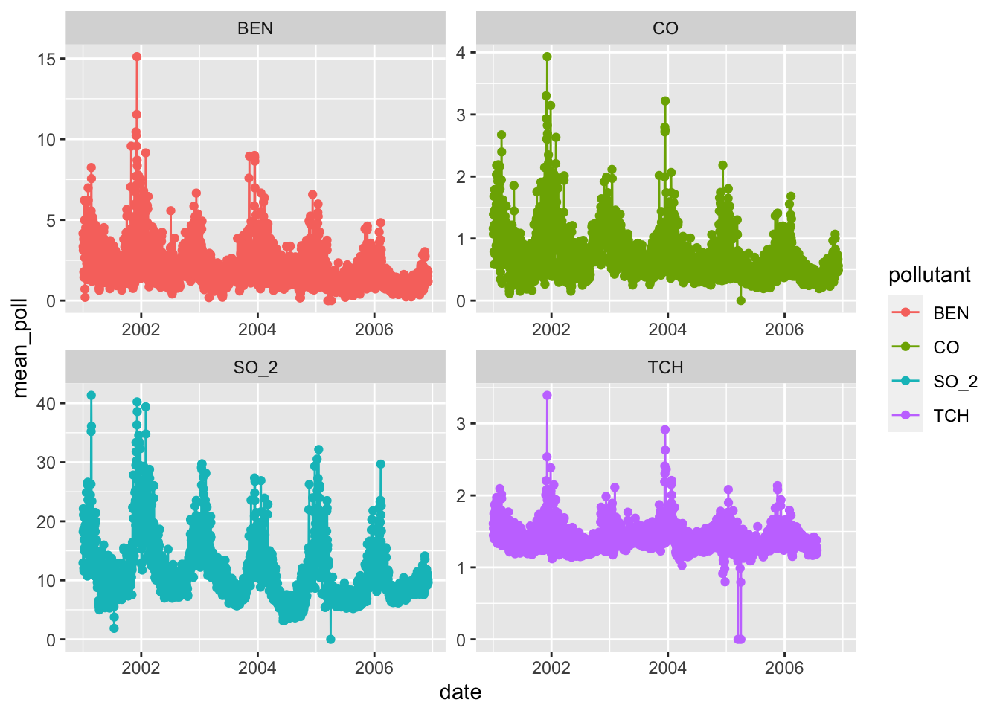

library(tidyverse)
avocado_prices <- read_csv("https://raw.githubusercontent.com/UBC-DSCI/data-science-a-first-intro-worksheets/main/worksheet_wrangling/data/avocado_prices.csv")
madrid_pollution <- read_tsv("https://raw.githubusercontent.com/jmgraham30/data-science-a-first-intro-worksheets/main/worksheet_wrangling/data/madrid_pollution.csv")DS 201 Homework 3
This is Homework Assignment 3 for DS 201. You can view the source code for this assignment on GitHub: view the source code.
For your amusement: Knock knock. “Who’s there?” Figs. “Figs who?” “Figs the doorbell. I’ve been knocking forever!”
Instructions
Please complete and turn in this assignment as a Quarto notebook.
Data for Homework Problems
This homework will involve the use of two data sets so, you should begin your Quarto notebook by including and running the follow R code chunk that loads the necessary packages and imports the data:
The avocado prices data set stored as
avocado_pricescomes from the Hass Avocado Board website. Some relevant columns in the data set:Date- The date in year-month-day formataverage_price- The average price of a single avocadotype- conventional or organicyr- The yearregion- The city or region of the observationsmall_hass_volumein pounds (lbs)
large_hass_volumein pounds (lbs)
extra_l_hass_volumein pounds (lbs)wk- integer number for the calendar week in the year (e.g., first week of January is 1, and last week of December is 52).
The Madrid pollution data set stored as
madrid_pollutioncomes from Kaggle. This data was collected under the instructions from Madrid’s City Council and is publicly available on their website. This data consists of measurements from vehcile inspection stations, the list of possible measurements and their explanations are given by the website:SO_2: sulphur dioxide level measured in μg/m³. High levels can produce irritation in the skin and membranes, and worsen asthma or heart diseases in sensitive groups.CO: carbon monoxide level measured in mg/m³. Carbon monoxide poisoning involves headaches, dizziness and confusion in short exposures and can result in loss of consciousness, arrhythmias, seizures or even death.NO_2: nitrogen dioxide level measured in μg/m³. Long-term exposure is a cause of chronic lung diseases, and are harmful for the vegetation.PM10: particles smaller than 10 μm. Even though they cannot penetrate the alveolus, they can still penetrate through the lungs and affect other organs. Long term exposure can result in lung cancer and cardiovascular complications.NOx: nitrous oxides level measured in μg/m³. Affect the human respiratory system worsening asthma or other diseases, and are responsible of the yellowish-brown color of photochemical smog.O_3: ozone level measured in μg/m³. High levels can produce asthma, bronchytis or other chronic pulmonary diseases in sensitive groups or outdoor workers.TOL: toluene (methylbenzene) level measured in μg/m³. Long-term exposure to this substance (present in tobacco smoke as well) can result in kidney complications or permanent brain damage.BEN: benzene level measured in μg/m³. Benzene is a eye and skin irritant, and long exposures may result in several types of cancer, leukaemia and anaemias. Benzene is considered a group 1 carcinogenic to humans.EBE: ethylbenzene level measured in μg/m³. Long term exposure can cause hearing or kidney problems and the IARC has concluded that long-term exposure can produce cancer.MXY: m-xylene level measured in μg/m³. Xylenes can affect not only air but also water and soil, and a long exposure to high levels of xylenes can result in diseases affecting the liver, kidney and nervous system.PXY: p-xylene level measured in μg/m³. See MXY for xylene exposure effects on health.OXY: o-xylene level measured in μg/m³. See MXY for xylene exposure effects on health.TCH: total hydrocarbons level measured in mg/m³. This group of substances can be responsible of different blood, immune system, liver, spleen, kidneys or lung diseases.NMHC: non-methane hydrocarbons (volatile organic compounds) level measured in mg/m³. Long exposure to some of these substances can result in damage to the liver, kidney, and central nervous system. Some of them are suspected to cause cancer in humans.
Problems
Problem 1
Which statement below is incorrect about vectors and data frames in R?
A. the columns of data frames are vectors
B. data frames can have columns of different types (e.g., a column of numeric data, and a column of character data)
C. vectors can have elements of different types (e.g., element one can be numeric, and element 2 can be a character)
D. data frames are a special kind of list
Which of the following does not characterize a tidy data set?
A. each row is a single observation
B. each value should not be in a single cell
C. each column is a single variable
D. each value is a single cell
Problem 2
For which scenario would using a group_by() + summarize() command be appropriate?
A. To apply the same function to every row.
B. To apply the same function to every column.
C. To apply the same function to groups of rows.
D. To apply the same function to groups of columns.
Problem 3
Use the
glimpsecommand examine theavocado_pricesandmadrid_pollutiondata sets. Based on the out put, list the number of rows and columns for the two data frames.For the two data sets
avocado_pricesandmadrid_pollution, use either thesummaryfunction or theskimfunction from theskmirpackage to determine if there are any missing values (which will be denoted byNA) for any of the variables in either of the two data sets.
Problem 4
This problem will ask you to apply various dplyr functions to the avocado_prices data set.
- Run the following R command in order to see what types and how many of each type of avocados there are in the data set:
table(avocado_prices$type)
conventional organic
8957 8954 Use an appropriate command(s) to filter the rows of the data set for which the type is organic.
Use an appropriate command(s) to select the average price, type, and region variables from the data set.
Use an appropriate command(s) to compute the mean for the
average_pricevariable grouped by region and filter rows with the regions with the top ten meanaverage_pricevalues. Which ten regions have the highest mean foraverage_price?The
mutatefunction can be used to create new variables from existing ones. Run the following command to create a new variable namedtotal_volumethat is made up by adding together the small, large, and extra large volumes from theavocado_pricesdata.
avocado_prices %>%
mutate(total_volume = small_hass_volume + large_hass_volume + extra_l_hass_volume)# A tibble: 17,911 × 10
Date average_price small_hass_volume large_hass_volume
<date> <dbl> <dbl> <dbl>
1 2015-12-27 1.33 1037. 54455.
2 2015-12-20 1.35 674. 44639.
3 2015-12-13 0.93 795. 109150.
4 2015-12-06 1.08 1132 71976.
5 2015-11-29 1.28 941. 43838.
6 2015-11-22 1.26 1184. 48068.
7 2015-11-15 0.99 1369. 73673.
8 2015-11-08 0.98 704. 101815.
9 2015-11-01 1.02 1022. 87316.
10 2015-10-25 1.07 842. 64757.
# ℹ 17,901 more rows
# ℹ 6 more variables: extra_l_hass_volume <dbl>, type <chr>, yr <dbl>,
# region <chr>, wk <dbl>, total_volume <dbl>Now that you know how to create the
total_volumevariable, use an appropriate command(s) to compute the average total volume by year.Use an appropriate command(s) to compute the average total volume by year for each region.
Problem 5
This problem will ask you to apply various dplyr functions to the madrid_pollution data set.
Use an appropriate command(s) to compute the average carbon monoxide level by year for each month. Further, arrange the result to determine the top ten values for the carbon monoxide level by year for each month.
Create a new data frame that contains only the columns
date,year,mnth,SO_2,BEN,CO, andTCH; and store the results in a variable calledmadrid_pollution_red.Use
pivot_longerto combine all the pollutant measurements from you new data framemadrid_pollution_redinto a single column calledpoll_measureand setnames_to = "pollutant". Store the result in a new variable namedmadrid_pollution_red_long.Now that you have your new variable
madrid_pollution_red_longrun the following command to produce a plot:
madrid_pollution_red_long %>%
mutate(date = date(date)) %>%
group_by(date,pollutant) %>%
summarise(mean_poll = mean(poll_measure,na.rm=TRUE)) %>%
ggplot(aes(x=date,y=mean_poll,color=pollutant)) +
geom_point() +
geom_line() +
facet_wrap(~pollutant,scales="free")
What does this plot tell us about the four pollutants BEN, CO, SO_2, and TCH?